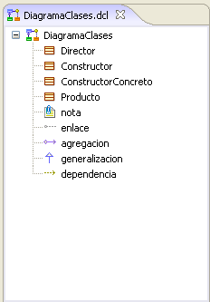
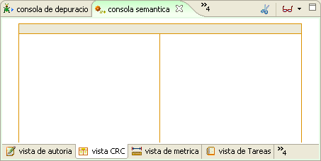
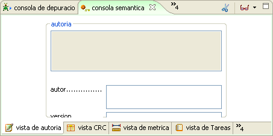

Marco de Extensión
El Marco de Extensión permite aumentar la semántica de los otros marcos, especialmente el de Expresión. Este marco tiene dos vistas principales, la del marco de Presentación, en donde se detallan todos los elementos de los otros marcos y el Marco de Perspectivas, donde la información proveniente de otros marcos puede ser analizada y extendida.
Marco de Presentación: este muestra los elementos particulares del Marco de Expresión sobre el cual se esté trabajando, bien sea el de Modelado Artístico o el de Desarrollo Ingenieril. Para el caso de los diagramas se mostrarán los elementos que lo componenen y en el caso de los entornos de desarrollo, se mostrarán los elementos asociados, como clases y librerias presentes en un proyecto.

Figura 1. Marco de Presentación
Marco de Perspectivas. Este marco también funciona bajo el concepto de pestañas. Permite alojar la ayuda, las perspectivas de métricas, balance, densidad y otras . Este marco también guarda una fuerte relación con el Marco de Expresión, debido a que los elementos Marco de Perspectivas son llamados desde éste.

Figura 2. Marco de Perspectiva
Vistas de Perspectiva: Cada perspectiva puede tener asociadas diferentes vistas que contextualizan o expanden su información, las vistas se ubican como pestañas en la parte inferior de la perspectiva.


Figura 3. Elementos de la vista de Perspectiva